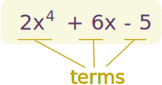
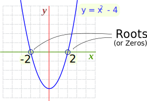
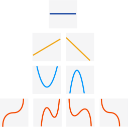
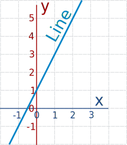
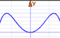
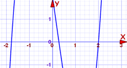
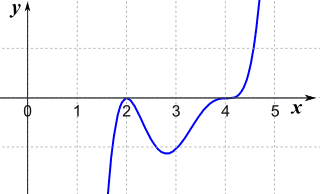

Solving Polynomials
A polynomial looks like this:|  |
| example of a polynomial |
Solving
"Solving" means finding the "roots" ...
... a "root" (or "zero") is where the function is equal to zero:

In between the roots the function is either entirely above,
or entirely below, the x-axis
Example: −2 and 2 are the roots of the function x2 − 4

Let's check:
- when x = −2, then x2 − 4 = (−2)2 − 4 = 4 − 4 = 0
- when x = 2, then x2 − 4 = 22 − 4 = 4 − 4 = 0
How do we solve polynomials? That depends on the Degree!
Degree
The first step in solving a polynomial is to find its degree.
The Degree of a Polynomial with one variable is ...
... the largest exponent of that variable.
When we know the degree we can also give the polynomial a name:
| Degree | Name | Example | Graph Looks Like |
|---|---|---|---|
| 0 | Constant | 7 |  |
| 1 | Linear | 4x+3 | |
| 2 | Quadratic | x2−3x+2 | |
| 3 | Cubic | 2x3−5x2 | |
| 4 | Quartic | x4+3x−2 | ... |
| etc | ... | ... | ... |
How To Solve
So now we know the degree, how to solve?
- Read how to solve Linear Polynomials (Degree 1) using simple algebra.
- Read how to solve Quadratic Polynomials (Degree 2) with a little work,
- It can be hard to solve Cubic (degree 3) and Quartic (degree 4) equations,
- And beyond that it can be impossible to solve polynomials directly.
So what do we do with ones we can't solve? Try to solve them a piece at a time!
If we find one root, we can then reduce the polynomial by one degree (example later) and this may be enough to solve the whole polynomial.
Here are some main ways to find roots.
1. Basic Algebra
We may be able to solve using basic algebra:
Example: 2x+1
2x+1 is a linear polynomial:

The graph of y = 2x+1 is a straight line
It is linear so there is one root.
Use Algebra to solve:
A "root" is when y is zero: 2x+1 = 0
Subtract 1 from both sides: 2x = −1
Divide both sides by 2: x = −1/2
And that is the solution:
x = −1/2
(You can also see this on the graph)
We can also solve Quadratic Polynomials using basic algebra (read that page for an explanation).
2. By experience, or simply guesswork.
It is always a good idea to see if we can do simple factoring:
Example: x3+2x2−x
This is cubic ... but wait ... we can factor out "x":
x3+2x2−x = x(x2+2x−1)
Now we have one root (x=0) and what is left is quadratic, which we can solve exactly.
Example: x3−8
Again this is cubic ... but it is also the "difference of two cubes":
x3−8 = x3−23
And so we can turn it into this:
x3−8 = (x−2)(x2+2x+4)
There is a root at x=2, because:
(2−2)(22+2×2+4) = (0)(22+2×2+4)
And we can then solve the quadratic x2+2x+4 and we are done
3. Graphically.
Graph the polynomial and see where it crosses the x-axis.
|  | We can enter the polynomial into the Function Grapher, and then zoom in to find where it crosses the x-axis. |
Graphing is a good way to find approximate answers, and we may also get lucky and discover an exact answer.
Caution: before you jump in and graph it, you should really know How Polynomials Behave, so you find all the possible answers!
Factors
This is useful to know: When a polynomial is factored like this:
f(x) = (x−a)(x−b)(x−c)...
Then a, b, c, etc are the roots!
So Linear Factors and Roots are related, know one and we can find the other.
(Read The Factor Theorem for more details.)
Example: f(x) = (x3+2x2)(x−3)
We see "(x−3)", and that means that 3 is a root (or "zero") of the function.
Sure?
Well, let us put "3" in place of x:
f(x) = (33+2·32)(3−3)
f(3) = (33+2·32)(0)
Yes! f(3)=0, so 3 is a root.
How to Check
Found a root? Check it!
Simply put the root in place of "x": the polynomial should be equal to zero.
Example: 2x3−x2−7x+2
The polynomial is degree 3, and could be difficult to solve. So let us plot it first:

The curve crosses the x-axis at three points, and one of them might be at 2. We can check easily, just put "2" in place of "x":
f(2) = 2(2)3−(2)2−7(2)+2
= 16−4−14+2
= 0
Yes! f(2)=0, so we have found a root!
How about where it crosses near −1.8:
f(−1.8) = 2(−1.8)3−(−1.8)2−7(−1.8)+2
= −11.664−3.24+12.6+2
= −0.304
No, it isn't equal to zero, so −1.8 will not be a root (but it may be close!)
But we did discover one root, and we can use that to simplify the polynomial, like this
Example (continued): 2x3−x2−7x+2
So, f(2)=0 is a root ... that means we also know a factor:
(x−2) must be a factor of 2x3−x2−7x+2
Next, divide 2x3−x2−7x+2 by (x−2) using Polynomial Long Division to find:
2x3−x2−7x+2 = (x−2)(2x2+3x−1)
So now we can solve 2x2+3x−1 as a Quadratic Equation and we will know all the roots.
That last example showed how useful it is to find just one root. Remember:
If we find one root, we can then reduce the polynomial by one degree and this may be enough to solve the whole polynomial.
How Far Left or Right
When trying to find roots, how far left and right of zero should we go?
There is a way to tell, and there are a few calculations to do, but it is all simple arithmetic. Read Bounds on Zeros for all the details.
Have We Got All The Roots?
There is an easy way to know how many roots there are. The Fundamental Theorem of Algebra says:
A polynomial of degree n ...
...
has n roots (zeros)
but we may need to use complex numbers
So: number of roots = the degree of polynomial.
Example: 2x3 + 3x − 6
The degree is 3 (because the largest exponent is 3), and so:
There are 3 roots.
But Some Roots May Be Complex
Yes, indeed, some roots may be complex numbers (ie have an imaginary part), and so will not show up as a simple "crossing of the x-axis" on a graph.
But there is an interesting fact:
Complex Roots always come in pairs!

So we either get no complex roots, or 2 complex roots, or 4, etc... Never an odd number.
Which means we automatically know this:
| Degree | Roots | Possible Combinations |
|---|---|---|
| 1 | 1 | 1 Real Root |
| 2 | 2 | 2 Real Roots, or 2 Complex Roots |
| 3 | 3 | 3 Real Roots, or 1 Real and 2 Complex Roots |
| 4 | 4 | 4 Real Roots, or 2 Real and 2 Complex Roots, or 4 Complex Roots |
| etc | etc! |
Positive or Negative Roots?
There is also a special way to tell how many of the roots are negative or positive called the Rule of Signs that you may like to read about.
Multiplicity of a Root
Sometimes a factor appears more than once. We call that Multiplicity:
Multiplicity is how often a certain root is part of the factoring.
Example: f(x) = (x−5)3(x+7)(x−1)2
This could be written out in a more lengthy way like this:
f(x) = (x−5)(x−5)(x−5)(x+7)(x−1)(x−1)
(x−5) is used 3 times, so the root "5" has a multiplicity of 3, likewise (x+7) appears once and (x−1) appears twice. So:
- the root +5 has a multiplicity of 3
- the root −7 has a multiplicity of 1 (a "simple" root)
- the root +1 has a multiplicity of 2
Q: Why is this useful?
A: It makes the graph behave in a special way!
When we see a factor like (x-r)n, "n" is the multiplicity, and
- even multiplicity just touches the axis at "r" (and otherwise stays one side of the x-axis)
- odd multiplicity crosses the axis at "r" (changes from one side of the x-axis to the other)
We can see it on this graph:
Example: f(x) = (x−2)2(x−4)3
(x−2) has even multiplicity, so it just touches the axis at x=2
(x−4) has odd multiplicity, so it crosses the axis at x=4
Like this:

Summary
- We can directly solve polynomials of Degree 1 (linear) and 2 (quadratic)
- For Degree 3 and up, graphs can be helpful
- It is also helpful to:
- Know how far left or right the roots may be
- Know how many roots (the same as its degree)
- Estimate how many may be complex, positive or negative
- Multiplicity is how often a certain root is part of the factoring.